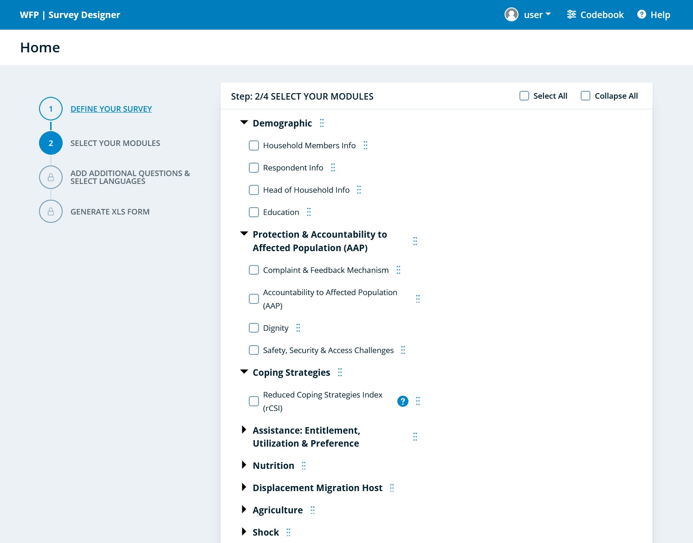
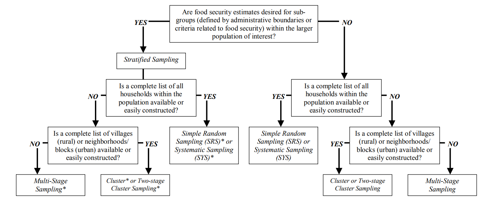

# intall connectmoda from cran
# install.packages("connectoModa")
library(connectoModa)
# Example usage to fetch users from MoDA
your_data <- get_user_moda(form_id = 56597, Token = "your_token_here")1 Survey Planning
when preparing, planning and designing survey, several factors need to be considered. this stage of the survey focuses on clearly identifying the information that you need to collect and how it will be used. by preparing, planning and designing the the survey you’ll be able to produce more acurate and useful insights.
This chapter will outline how to prepare and design survey tool with particular focus on mobile data collection. it addresses the challenges of creating a questionnaire and explains how to use SurveyDeisgner and MoDa to develop an electronic data collection tool.
1.1 SurveyDesigner
Survey Designer is an application that allows users in the field to quickly and easily build standardized assessment and monitoring surveys. All indicators from the Corporate Results Framework (2022-2025) will be automatically available for country offices in the Survey Designer, as well as a variety of other questions and indicators to generate standardized surveys. Survey Designer allows users to export surveys as an XLSForm, or directly publish the surveys in MoDa or Kobo.

1.2 Checking XSLForms
1.3 Data Analysis Plan (DAP)
Analysis plan is a simple table that lists the information to be collected and guide its analysis. DAP should be prepared prior to designing any data collection tool and helps to ensure the efficiency and keep the process and analysis focused.
1.3.1 Literature Review Matrix
Information that has been collected by others but relevant to the current assessment or study is considered as secondary data. it could be population and demographic data, socoi-economic/health and nutrition indicators or livelihood systems.
the reason why to use secondary data is to save time, form initial hypothesis, enable to focus on potential information gaps, reduce assessment fatigue and enhance cooperation and coordination among main stakeholders.
when information gaps cannot be filled by secondary data is advised to be collected on thos missing issues, if deemed possible and feasible.
1.4 Downloading Data from MoDa
You can download data from MoDa server through the API using modadownloader package. its prety straight forward and you need to provide your project initial and token information. reproducible example can be found in the below;
1.5 Sampling
Data collection is expensive and time consuming. its is also time consuming for respondents. deciding on sample size is a trade-off between precision and budget and limiting response burden.
1.5.1 Why take a sample?
sample size calculations tell you how many sampling units you need to include in your survey to get some required level of precision The larger sample the better
1.5.2 What are the steps in Sampling Design?
to estimate sample size you need to know
- Estimate of the prevalence of key indicator
- Precision desired
- Level of confidence
- Expected response rate
- Population
1.5.3 How do get a good Sample
 ### Simple Random Sample
Simple random sampling is the most straightforward of the probability sampling methods. it involves the random selection of households from a complete list of all households within the population of interest. simple random sampling has a statistical advantage over other sampling methods and requires a smaller sample size.
How do we draw simple random sample?
1.5.4 Stratified Random Sample
How to form strata? - How do we draw statistical sample? - How do we perform the weights of results that are obtained due to unequal sample size in each stratum? - what is special about proportional probability (PPS) - when do we apply PPS?
1.5.5 Systematic Random Sampling
systematic sampling shares the same information requirements as simple random sampling. in constant to random selection, this method involves the systematic selection of households from a complete list of all households within the population of interest.
what are random ordered and periodic purpose? - when do we choose systematic sample? - how do we compute the characteristic of systematic sample
1.5.6 Cluster Sampling
how do we draw cluster sample? - when is a cluster sampling an effective design for obtaining information at minimum cost?
what is a two-stage cluster sample? - when do we use two-stage sampling? - how do we draw 2 stage sample.
calculate_sample_size <- function(margin_of_error, confidence_level, population_size) {
# Validate input parameters
if (!is.numeric(margin_of_error) || margin_of_error <= 0 || margin_of_error >= 1) {
stop("Margin of error must be a numeric value between 0 and 1 (exclusive).")
}
if (!is.numeric(confidence_level) || !confidence_level %in% c(0.90, 0.95, 0.99)) {
stop("Confidence level must be 0.90, 0.95, or 0.99.")
}
if (!is.numeric(population_size) || population_size <= 0) {
stop("Population size must be a positive numeric value.")
}
# Calculate the Z-score based on the confidence level
alpha <- 1 - confidence_level
z_score <- qnorm(1 - alpha / 2)
# Calculate the sample size
p <- 0.5 # Assuming maximum variability (50%) for a conservative estimate
numerator <- (z_score^2 * p * (1 - p))
denominator <- (margin_of_error^2)
sample_size_infinite <- numerator / denominator
# Adjust for finite population size (if population size is not very large)
if (population_size > 0) {
sample_size <- ceiling((sample_size_infinite * population_size) /
(sample_size_infinite + population_size - 1))
} else {
sample_size <- ceiling(sample_size_infinite)
}
return(sample_size)
}
# Example usage:
margin_error <- 0.05 # 5% margin of error
confidence <- 0.95 # 95% confidence level
population <- 1000 # Population size of 1000
recommended_n <- calculate_sample_size(margin_error, confidence, population)
cat("Recommended sample size:", recommended_n, "\n")Recommended sample size: 278 # Example with a very large population (effectively infinite):
large_population_n <- calculate_sample_size(0.03, 0.99, 1000000)
cat("Recommended sample size for large population:", large_population_n, "\n")Recommended sample size for large population: 1840